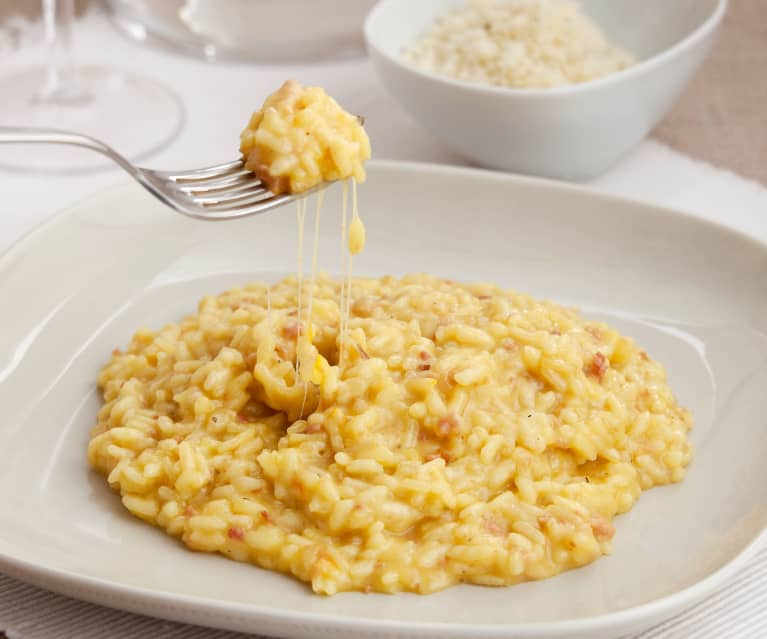

Risotto

Description
Ingredientes
- Arroz(Rice)
- Vino blanco(White wine)
- Caldo(Bouillon)
- Queso parmesano rallado(Grated Parmesan cheesed)
- Crema (Cream)
- Mantequilla(Butter)
Proceso
- En un wok o Olla saltera el arroz
- Agregar cantidad moderada de vino, revolver hasta qe no quede vino
- Empezar a agregar el caldo hasta que apenas tape el arroz, revolver constantemente
- Cuando el caldo baje mucho reptir el tercer paso
- Cuando el arroz este cocido agregar la mantequilla, la crema y el queso, revolver hasta que quede homogeneo y servir
Back